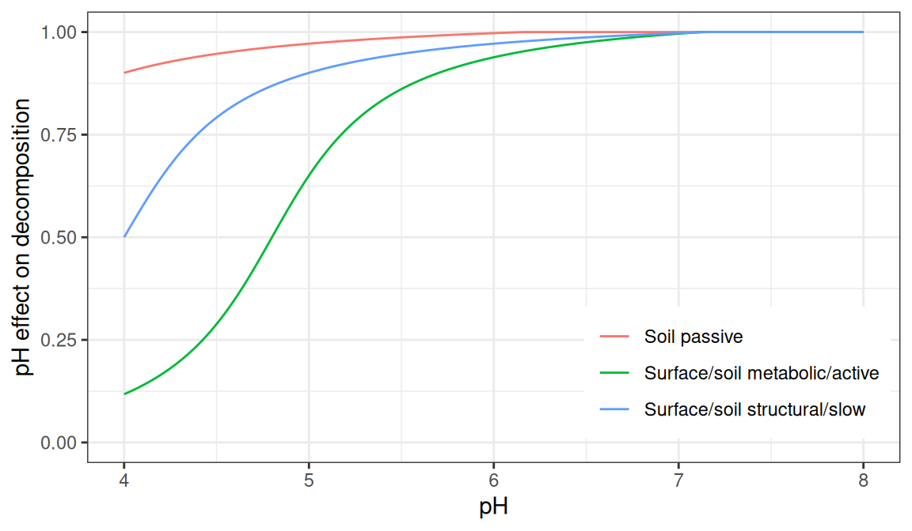
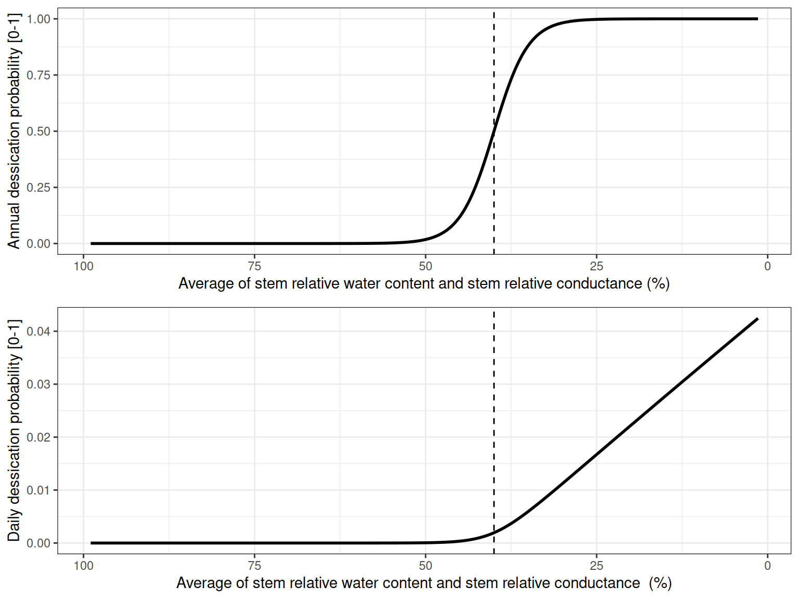
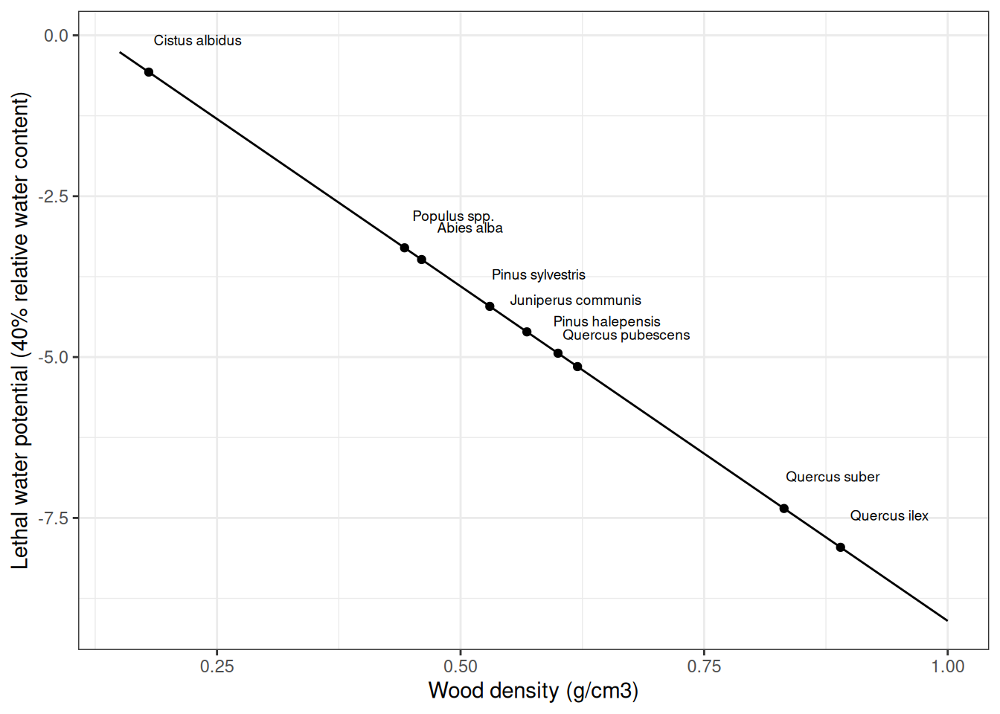

Chapter 18 Decomposition and soil biogeochemistry
18.1 Carbon pools, losses and fluxes
Carbon pools and fluxes between them were described in the design section and illustrated in fig. 15.4. The following table provides the terminologic mapping between carbon pools in MEDFATE, which mainly follows Bonan et al. (2019), and the corresponding pools in CENTURY:
| MEDFATE | CENTURY (Parton et al.) | CENTURY code |
|---|---|---|
| Small branches snags* | ||
| Large wood snags* | ||
| Twig litter* | ||
| Small branch litter | Dead fine branch | wood1c |
| Large wood litter | Dead large wood | wood2c |
| Coarse root litter | Dead coarse roots | wood2c |
| Structural leaf litter | Surface structural | strucc(1) |
| Metabolic surface | Surface metabolic | metabc(1) |
| Active surface | Surface microbe | som1c(1) |
| Slow surface | som2c(1) |
|
| Structural fine root litter | Belowground structural | strucc(2) |
| Metabolic belowground | Belowground metabolic | metabc(2) |
| Active belowground | Active organic | som1c(2) |
| Slow belowground | Slow organic | som2c(2) |
| Passive belowground | Passive | som3c |
The first three carbon pools (marked with an asterisk) are those new to MEDFATE, in comparison with Bonan et al. (2019). In CENTURY, only leaf litter and fine root litter are those conforming structural pools, whereas dead wood (either fine branches, large wood or coarse roots) is considered separately.
Each (daily) time step a decomposition rate \(k_{i}\) is estimated for each carbon pool \(i\). This decomposition rate leads to an amount of carbon (\(\Delta C_{i}\)) being loss from the carbon pool: \[\begin{equation} \Delta C_{i} = k_{i} \cdot \Delta t \end{equation}\]
The carbon lost can exit the carbon pool as heterotrophic respiration (\(HR_{i}\)) or it can lead to a carbon flux to another carbon pool \(j\), e.g. \(F_{i,j}\). The dynamics of the whole set of pools can solved using matrix algebra. The following sections detail how decomposition rates are estimated as well as the estimation of respiration and fluxes between carbon pools.
18.2 Decomposition rates
Each carbon pool \(i\) has its own base decomposition rate (\(k_{\text{base},i}\)). The base decomposition rates of a carbon pool \(i\) are reduced by multiplicative functions of environmental factors:
\[\begin{equation} k_{i} = k_{\text{base},i} \cdot f(T) \cdot f(\theta) \cdot f(pH) \end{equation}\]
Where \(k_{\text{base,}i}\) is the base daily decomposition rate for pool \(i\) which is multiplied by three modifiers: \(ƒ(T)\) is the effect of temperature, \(f(\theta_{rel})\) is the effect of moisture relative to saturation, and \(f(pH)\) is the effect of soil pH. Additional factors are considered for specific pools. For example, belowground pools include a factor to account for anaerobic conditions. Similarly, structural carbon pools include a factor to account for the effect of lignin percent on decay rates.
18.2.1 Effect of pH
The effect of pH on decomposition, \(f(pH)\) is calculated using:
\[\begin{equation} f(pH) = b + \frac{c}{\pi} \cdot \text{tan}^{-1} [d \cdot (pH - a) \cdot \pi] \end{equation}\]
where parameters \(a\), \(b\), \(c\) and \(d\) depend on the specific carbon pool:
| Carbon pool(s) | \(a\) | \(b\) | \(c\) | \(d\) |
|---|---|---|---|---|
| Surface/belowground metabolic | 4.8 | 0.5 | 1.14 | 0.7 |
| Surface/belowground structural | 4.0 | 0.5 | 1.1 | 0.7 |
| Surface active | 4.0 | 0.5 | 1.1 | 0.7 |
| Belowground active | 4.8 | 0.5 | 1.14 | 0.7 |
| Surface/belowground slow | 4.0 | 0.5 | 1.1 | 0.7 |
| Belowground passive | 3.0 | 0.5 | 1.1 | 0.7 |

Figure 18.1: Effect of pH on decomposition rates, for different carbon pools.
18.2.2 Effect of temperature
The effect of temperature on decomposition, \(f(T)\), follows the same general structure as the effect of pH, but with fixed coefficients (i.e. \(a = 15.7\), \(b = 0.56\), \(c = 1.46\) and \(d = 0.031\)) (Del Grosso et al. 2005):
\[\begin{equation} f(T) = 0.56 + \frac{1.46}{\pi} \cdot \text{tan}^{-1} [0.0309 \cdot \pi \cdot (T - 15.7) ] \end{equation}\]

Figure 18.2: Effect of temperature on decomposition rates.
For most carbon pools, the temperature value is that corresponding to the first (top) soil layer. For decomposition of snags, the temperature within the canopy is used.
18.2.3 Effect of moisture
The effect of moisture is modelled using (Kelly et al. 2000):
\[\begin{equation} f(\theta_{rel}) = \left(\frac{\theta_{rel} - b}{a - b} \right) ^{ \frac{d\cdot(b-a)}{a-c}} \cdot \left( \frac{\theta_{rel} - c}{a - c}\right) ^{d} \end{equation}\]
where \(\theta_{rel}\) is moisture relative to saturation, and here parameters \(a\), \(b\), \(c\) and \(d\) depend on soil texture (Kelly et al. 2000):
| Soil texture | \(a\) | \(b\) | \(c\) | \(d\) |
|---|---|---|---|---|
| Fine texture | 0.6 | 1.27 | 0.0012 | 2.84 |
| Coarse texture | 0.55 | 1.7 | -0.007 | 3.22 |

Figure 18.3: Effect of moisture relative to saturation (\(\theta_{rel}\)) on decomposition rates, for fine textured and coarse textured soil.
For most carbon pools, relative moisture is estimated from the moisture of the first (top) soil layer. In the case of snag carbon pools, relative moisture is estimated from a ratio of moisture content in equilibrium with air relative humidity and moisture content at saturation.
18.3 Decomposition process of leaf and fine root litter, coarse woody debris and standing dead wood
18.3.1 Leaf and fine root litter
When leaf or fine root litter is produced, the corresponding carbon is divided into structural and metabolic pools (fig. 15.4). Metabolic litter is labile material that decomposes quickly, whereas structural material contains cellullose and ligning and decomposes more slowly. The fraction of leaf and fine root litter that is added to the corresponding surface or belowground metabolic pool is determined using:
\[\begin{equation} f_{\text{metabolic}} = 0.85 - 0.0013 (\text{lignin/N}) \end{equation}\]
A higher lignin/N ratio thus results in more structural litter. In turn, structural litter pools have a slower decaying rate (by default \(k_{\text{base,leaf-struct}}=2\text{y}^{-1}\) and \(k_{\text{base,fineroot-struct}}=4.9\text{y}^{-1}\) for leaves and fine roots, respectively) compared to their corresponding metabolic pools (by default \(k_{\text{base,surface-metabolic}}=8\text{y}^{-1}\) and \(k_{\text{base,belowground-metabolic}}=18.5\text{y}^{-1}\) for surface and belowground pools, respectively).
There are as many leaf and fine root structural pools as plant species, because decomposition rates depend on lignin content. In contrast, there is only one surface metabolic pool and one belowground metabolic pool.
18.3.1.1 Leaf structural pools
Leaf structural pools are species-specific and receive carbon from partitioning of leaf litter. The rate of decomposition of a leaf structural pool \(i\) with leaf lignin content \(f_{\text{leaf-lignin},i}\) is:
\[\begin{equation} k_{\text{leaf-struct}, i} = k_{\text{base, leaf-struct}} \cdot f(T) \cdot f(\theta_{rel}) \cdot f(pH) \cdot \exp(-3 \cdot f_{\text{leaf-lignin}, i}) \end{equation}\]
The loss of carbon from a leaf structural pool (\(\Delta C_{\text{leaf-struct}, i}\)) is apportioned between heterotrophic respiration (\(HR_{\text{leaf-struct}, i}\)) and the carbon flux to the surface active (\(F_{\text{leaf-struct}, \text{surface-active},i}\)) and surface slow (\(F_{\text{leaf-struct}, \text{surface-slow},i}\)) pools:
\[\begin{eqnarray} HR_{\text{leaf-struct}, i} &=& \Delta C_{\text{leaf-struct}, i} \cdot (f_{\text{leaf-lignin},i} \cdot 0.30 + (1.0 - f_{\text{leaf-lignin},i}) \cdot 0.45) \\ F_{\text{leaf-struct}, \text{surface-active},i} &=& \Delta C_{\text{leaf-struct}, i} \cdot (1.0 - f_{\text{leaf-lignin},i}) \cdot (1 - 0.45) \\ F_{\text{leaf-struct}, \text{surface-slow},i} &=& \Delta C_{\text{leaf-struct}, i} \cdot f_{\text{leaf-lignin},i} \cdot (1 - 0.30) \end{eqnarray}\]
18.3.1.2 Surface metabolic pool
The surface metabolic pool receives carbon from partitioning of leaf litter. The rate of decomposition of the surface metabolic pool is:
\[\begin{equation} k_{\text{surface-metabolic}} = k_{\text{base,surface-metabolic}} \cdot f(T) \cdot f(\theta_{rel}) \cdot f(pH) \end{equation}\]
The loss of carbon from the surface metabolic pool (\(\Delta C_{\text{surface-metabolic}}\)) is apportioned between heterotrophic respiration (\(HR_{\text{surface-metabolic}}\)) and the carbon flux to the surface active (\(F_{\text{surface-metabolic}, \text{surface-active}}\)) pool:
\[\begin{eqnarray} HR_{\text{surface-metabolic}} &=& \Delta C_{\text{surface-metabolic}} \cdot 0.55 \\ F_{\text{surface-metabolic}, \text{surface-active}} &=& \Delta C_{\text{surface-metabolic}} \cdot (1 - 0.55) \end{eqnarray}\]
18.3.1.3 Fine root structural pools
Fine root structural pools are species-specific and receive carbon from fine root litter. The rate of decomposition of a fine root structural pool \(i\) with fine root lignin content \(f_{\text{fineroot-lignin},i}\) is:
\[\begin{equation} k_{\text{fineroot-struct}, i} = k_{\text{base, fineroot-struct}} \cdot f(T) \cdot f(\theta_{rel}) \cdot f(pH) \cdot \exp(-3 \cdot f_{\text{fineroot-lignin}, i}) \cdot f(O_2) \end{equation}\]
The loss of carbon from a fine root structural pool (\(\Delta C_{\text{fineroot-struct}, i}\)) is apportioned between heterotrophic respiration (\(HR_{\text{fineroot-struct}, i}\)) and the carbon flux to the belowground active (\(F_{\text{fineroot-struct}, \text{belowground-active},i}\)) and belowground slow (\(F_{\text{fineroot-struct}, \text{belowground-slow},i}\)) pools:
\[\begin{eqnarray} HR_{\text{fineroot-struct}, i} &=& \Delta C_{\text{fineroot-struct}, i} \cdot (f_{\text{fineroot-lignin},i} \cdot 0.30 + (1.0 - f_{\text{leaf-lignin},i}) \cdot 0.55) \\ F_{\text{fineroot-struct}, \text{belowground-active},i} &=& \Delta C_{\text{fineroot-struct}, i} \cdot (1.0 - f_{\text{fineroot-lignin},i}) \cdot (1 - 0.55) \\ F_{\text{fineroot-struct}, \text{belowground-slow},i} &=& \Delta C_{\text{fineroot-struct}, i} \cdot f_{\text{fineroot-lignin},i} \cdot (1 - 0.30) \end{eqnarray}\]
18.3.1.4 Belowground metabolic pool
The belowground metabolic pool receives carbon from partitioning of fine root litter as well as from root exudation (\(RE\)). The rate of decomposition of the belowground metabolic pool is:
\[\begin{equation} k_{\text{belowground-metabolic}} = k_{\text{base,belowground-metabolic}} \cdot f(T) \cdot f(\theta_{rel}) \cdot f(pH) \cdot f(O_2) \end{equation}\]
The loss of carbon from the belowground metabolic pool (\(\Delta C_{\text{belowground-metabolic}}\)) is apportioned between heterotrophic respiration (\(HR_{\text{belowground-metabolic}}\)) and the carbon flux to the belowground active (\(F_{\text{belowground-metabolic}, \text{belowground-active}}\)) pool:
\[\begin{eqnarray} HR_{\text{belowground-metabolic}} &=& \Delta C_{\text{belowground-metabolic}} \cdot 0.55 \\ F_{\text{belowground-metabolic}, \text{belowground-active}} &=& \Delta C_{\text{belowground-metabolic}} \cdot (1 - 0.55) \end{eqnarray}\]
18.3.2 Coarse roots
Coarse root carbon pools (in \(g C \cdot m^{-2}\)) include belowground woody material of all sizes, created from mortality of belowground plant structures. The rate of decomposition of a coarse root pool \(i\) with lignin content \(f_{\text{woody-lignin},i}\) is:
\[\begin{equation} k_{\text{coarseroot},i} = k_{\text{base, coarseroot}} \cdot f(T) \cdot f(\theta_{rel}) \cdot \exp(-3 \cdot f_{\text{woody-lignin},i}) \cdot f(O_2) \end{equation}\]
And the loss of carbon (\(\Delta C_{\text{coarseroot}, i}\)) is apportioned between heterotrophic respiration (\(HR_{\text{coarseroot},i}\)) and the carbon flux to the belowground active (\(F_{\text{coarseroot, belowground-active},i}\)) and belowground slow (\(F_{\text{coarseroot, belowground-slow}, i}\)) pools:
\[\begin{eqnarray} HR_{\text{coarseroot},i} &=& \Delta C_{\text{coarseroot},i} \cdot (f_{\text{woody-lignin},i} \cdot 0.30 + (1.0 - f_{\text{woody-lignin},i}) \cdot 0.45) \\ F_{\text{coarseroot, belowground-active},i} &=& \Delta C_{\text{coarseroot},i} \cdot (1.0 - f_{\text{woody-lignin},i}) \cdot (1 - 0.45) \\ F_{\text{coarseroot, belowground-slow}, i} &=& \Delta C_{\text{coarseroot},i} \cdot f_{\text{woody-lignin},i} \cdot (1 - 0.30) \end{eqnarray}\]
18.3.3 Downed woody debris
Downed woody debris is created via snag fall or twig litterfall. Three types of carbon pools are considered for downed woody debris (fig. 15.4): twigs (diameters lower than 0.635 cm; 1h fuels), small branches (diameters between 0.635 cm and 7.5 cm; 10h and 100h fuels; in \(g C \cdot m^{-2}\)) and large wood (diameters larger than 7.5 cm; 1000h and 10000h fuels; in \(g C \cdot m^{-2}\)). In contrast to litter, there is no separation between structural and metabolic components, since all carbon is considered to be structural.
The rate of decomposition of a downed dead pool \(i\) with lignin content \(f_{\text{woody-lignin},i}\) is:
\[\begin{equation} k_{i} = k_{\text{base,downed-woody}} \cdot f(T) \cdot f(\theta_{rel}) \cdot \exp(-3 \cdot f_{\text{woody-lignin},i}) \end{equation}\]
where \(k_{\text{base,downed-woody}}\) is the base daily decomposition rate for downed woody elements (which is higher for twigs, than small branches, in turn larger than large wood); temperature and moisture factors are the same as for leaf litter.
The loss of carbon from downed coarse wood (\(\Delta C_{\text{downed-woody},i}\)) is apportioned between heterotrophic respiration (\(HR_{\text{downed-woody},i}\)) and the carbon flux to the surface active (\(F_{\text{downed-woody,surface-active},i}\)) and surface slow (\(F_{ \text{downed-woody,surface-slow},i}\)) pools:
\[\begin{eqnarray} HR_{\text{downed-woody},i} &=& \Delta C_{\text{downed-woody},i} \cdot (f_{\text{woody-lignin},i} \cdot 0.30 + (1.0 - f_{\text{woody-lignin},i}) \cdot 0.45) \\ F_{\text{downed-woody,surface-active},i} &=& \Delta C_{\text{downed-woody},i} \cdot (1.0 - f_{\text{woody-lignin},i}) \cdot (1 - 0.45) \\ F_{ \text{downed-woody,surface-slow},i} &=& \Delta C_{\text{downed-woody},i} \cdot f_{\text{woody-lignin},i} \cdot (1 - 0.30) \end{eqnarray}\]
18.3.4 Standing dead wood
Standing dead wood is created via mortality of plant aboveground structures or sapwood senenscence (in the case of shrubs). Two types carbon pools are considered for standing dead wood (fig. 15.4): small branches (diameters between 0.635 cm and 7.5 cm; 10h and 100h fuels; in \(g C \cdot m^{-2}\)) and large wood (diameters larger than 7.5 cm; 1000h and 10000h fuels; in \(g C \cdot m^{-2}\)).
The rate of decomposition of a standing dead pool \(i\) with lignin content \(f_{\text{woody-lignin},i}\) is:
\[\begin{equation} k_{\text{standing-woody},i} = k_{\text{standing-woody,base}} \cdot f(T) \cdot f(\theta_{rel}) \cdot \exp(-3 \cdot f_{\text{woody-lignin},i}) \end{equation}\]
where \(k_{\text{standing-woody,base}}\) is the base daily decomposition rate for standing woody elements (which is higher for small branches than large wood); and atmosphere (or canopy in the case of advanced simulations) air temperature is used for temperature effects (i.e. \(T = T_{air}\) or \(T = T_{can}\)). Moisture relative to saturation (\(\theta_{rel}\)) is estimated as the ratio of actual fuel moisture to its maximum value (both with units of percent of water mass to dry mass):
\[\begin{equation} \theta_{rel} = \theta_{simard}(T_{air}, RH_{air})/\theta_{max} \end{equation}\]
where \(\theta_{simard}\) is the equilibrium moisture content (Simard 1968) of wood, according to an empirical relationship with air temperature and air relative humidity (Viney 1991) and \(\theta_{max}\) is the maximum fuel moisture content, which depends on wood density (assuming the density of water as \(1\,\, g\cdot cm^{-3}\)):
\[\begin{equation} \theta_{max} = 100 \cdot \left(\frac{1}{\rho_{wood}} - \frac{1}{\rho_{ws}} \right) \end{equation}\]
where \(\rho_{wood}\) is wood density (\(g\cdot cm^{-3}\)) and \(\rho_{ws} = 1.53\,\,g\cdot cm^{-3}\) is the density of the wood substance (a constant). Since \(\theta_{Simard}\) ranges between 0% and 30%, whereas \(\theta_{max}\) ranges between 45% (\(\rho_{wood} = 0.9\)) and 135% (\(\rho_{wood} = 0.5\)), the \(\theta_{rel}\) ratio is frequently lower than the same ratio assessed from soil moisture, resulting in slower decomposition rates.
Similarly to the downed dead wood, the loss of carbon from standing dead pools (\(\Delta C_{\text{standing-woody},i}\)) is apportioned between heterotrophic respiration (\(HR_{\text{standing-woody},i}\)) and the carbon flux to the surface active (\(F_{\text{standing-woody,surface-active},i}\)) and surface slow (\(F_{\text{standing-woody,surface-slow},i}\)) pools:
\[\begin{eqnarray} HR_{\text{standing-woody},i} &=& \Delta C_{\text{standing-woody},i} \cdot (f_{\text{woody-lignin},i} \cdot 0.30 + (1.0 - f_{\text{woody-lignin},i}) \cdot 0.45) \\ F_{\text{standing-woody,surface-active},i} &=& \Delta C_{\text{standing-woody},i} \cdot (1.0 - f_{\text{woody-lignin},i}) \cdot (1 - 0.45) \\ F_{\text{standing-woody,surface-slow},i} &=& \Delta C_{\text{standing-woody},i} \cdot f_{\text{woody-lignin},i} \cdot (1 - 0.30) \end{eqnarray}\]
18.4 Decomposition in soil organic carbon pools
Soil organic matter is represented by pools of active, slow and passive carbon that represent material with increasingly longer turnover time. These pools have a surface and belowground component, except for the passive pool, which occurs belowground only (fig. 15.4). The active pools represent live soil microbes and microbial products and decomposes rapidly. The slow pool includes decay-resistant plant material from the lignin portion of structural litter and soil-stabilized material from the active pool. Carbon fluxes exist between the active and slow pools of the surface and belowground layers, as well as between the active and passive belowground pools. In addition, a carbon flux connection between surface and belowground is included via physical mixing between slow pools. The following details the carbon losses, heterotrophic respiration and fluxes for and between pools.
18.4.1 Active surface pool
The active surface pool receives carbon from surface structural pools, the metabolic surface pool and from the slow surface pool. The rate of decomposition of the active surface pool is:
\[\begin{equation} k_{\text{surface-active}} = k_{\text{base,surface-active}} \cdot f(T) \cdot f(\theta_{rel}) \cdot f(pH) \end{equation}\]
The loss of carbon from the surface active pool (\(\Delta C_{\text{surface-active}}\)) is apportioned between heterotrophic respiration (\(HR_{\text{surface-active}}\)) and the carbon flux to the surface slow pool (\(F_{\text{surface-active}, \text{surface-slow}}\)):
\[\begin{eqnarray} HR_{\text{surface-active}} &=& \Delta C_{\text{surface-active}} \cdot 0.60 \\ F_{\text{surface-active}, \text{surface-slow}} &=& \Delta C_{\text{surface-active}} \cdot (1 - 0.60) \end{eqnarray}\]
18.4.2 Slow surface pool
The slow surface pool receives carbon from decomposition of surface structural litter and from the active surface pool. The rate of decomposition of the slow surface pool is:
\[\begin{equation} k_{\text{surface-slow}} = (k_{\text{base,surface-slow}} \cdot f(pH) + k_{\text{mixing}}) \cdot f(T) \cdot f(\theta_{rel}) \end{equation}\]
where \(k_{\text{mixing}}\) is the rate of carbon flux from slow surface to slow belowground due to mixing. The loss of carbon from the surface slow pool (\(\Delta C_{\text{surface-slow}}\)) is apportioned between heterotrophic respiration (\(HR_{\text{surface-slow}}\)), the carbon flux to back to the surface active pool (\(F_{\text{surface-slow}, \text{surface-active}}\)) and the carbon flux to the belowground slow pool (\(F_{\text{surface-slow}, \text{belowground-slow}}\)):
\[\begin{eqnarray} HR_{\text{surface-slow}} &=& \Delta C_{\text{surface-slow}} \cdot (1 - k_{mix,frac}) \cdot 0.55 \\ F_{\text{surface-slow}, \text{surface-active}} &=& \Delta C_{\text{surface-slow}} \cdot (1 - k_{mix,frac}) \cdot (1 - 0.55) \\ F_{\text{surface-slow}, \text{belowground-slow}} &=& \Delta C_{\text{surface-slow}} \cdot k_{mix,frac} \end{eqnarray}\]
where \(k_{mix,frac} = k_{\text{mixing}}/(k_{\text{base,surface-slow}} \cdot f(pH) + k_{\text{mixing}})\).
18.4.3 Active belowground pool
The active belowground pool receives carbon from belowground structural and metabolic pools as well as from the slow and passive belowground pools. The rate of decomposition of the active belowground pool is:
\[\begin{equation} k_{\text{belowground-active}} = k_{\text{base,belowground-active}} \cdot f(T) \cdot f(\theta_{rel}) \cdot f(pH) \cdot f_{texture} \cdot f(O_2) \end{equation}\]
where \(f_{texture} = 0.25 + 0.75 \cdot P_{sand}\) and \(P_{sand}\) is the proportion of sand.
The loss of carbon from the belowground active pool (\(\Delta C_{\text{belowground-active}}\)) is apportioned between heterotrophic respiration (\(HR_{\text{belowground-active}}\)), the carbon flux to the belowground slow pool (\(F_{\text{belowground-active}, \text{belowground-slow}}\)) and the carbon flux to the belowground passive pool (\(F_{\text{belowground-active}, \text{belowground-passive}}\)), as a function of \(P_{clay}\):
\[\begin{eqnarray} HR_{\text{belowground-active}} &=& \Delta C_{\text{belowground-active}} \cdot (0.17 + 0.68 \cdot P_{clay}) \\ F_{\text{belowground-active}, \text{belowground-passive}} &=& \Delta C_{\text{belowground-active}} \cdot (0.003 + 0.032 \cdot P_{clay}) \cdot f_{anaer} \\ F_{\text{belowground-active}, \text{belowground-slow}} &=& \Delta C_{\text{belowground-active}} - HR_{\text{belowground-active}} - F_{\text{belowground-active}, \text{belowground-passive}} \end{eqnarray}\]
where \(f_anaer = (1 + 5 \cdot (1 - f(O_2)))\). Thus, the decomposition rate of the belowground active pool increases and the respiration fraction of carbon losses also increases along with the sand fraction.
18.4.4 Slow belowground pool
The slow belowground pool receives carbon from belowground structural pools, from the slow surface pool as well as from the active belowground pool. The rate of decomposition of the slow belowground pool is:
\[\begin{equation} k_{\text{belowground-slow}} = k_{\text{base,belowground-slow}} \cdot f(T) \cdot f(\theta_{rel}) \cdot f(pH) \cdot f(O_2) \end{equation}\]
The loss of carbon from the belowground slow pool (\(\Delta C_{\text{belowground-slow}}\)) is apportioned between heterotrophic respiration (\(HR_{\text{belowground-slow}}\)), the carbon flux to back to the belowground active pool (\(F_{\text{belowground-slow}, \text{belowground-active}}\)) and the carbon flux to the belowground passive pool (\(F_{\text{belowground-slow}, \text{belowground-passive}}\)):
\[\begin{eqnarray} HR_{\text{belowground-slow}} &=& \Delta C_{\text{belowground-slow}} \cdot 0.55 \\ F_{\text{belowground-slow}, \text{belowground-active}} &=& \Delta C_{\text{belowground-slow}} \cdot (1 - (0.003 + 0.009 \cdot P_{clay}) \cdot f_{anaer} - 0.55) \\ F_{\text{belowground-slow}, \text{belowground-passive}} &=& \Delta C_{\text{belowground-slow}} \cdot (0.003 + 0.009 \cdot P_{clay}) \cdot f_{anaer} \end{eqnarray}\]
where \(f_{anaer} = (1 + 5 \cdot (1 - f(O_2)))\).
18.4.5 Passive belowground pool
The passive belowground pool receives carbon from the slow belowground pool. The rate of decomposition of the passive belowground pool is:
\[\begin{equation} k_{\text{belowground-passive}} = k_{\text{base,belowground-passive}} \cdot f(T) \cdot f(\theta_{rel}) \cdot f(pH) \cdot f(O_2) \end{equation}\]
The loss of carbon from the passive slow pool (\(\Delta C_{\text{belowground-passive}}\)) is apportioned between heterotrophic respiration (\(HR_{\text{belowground-passive}}\)), the carbon flux to back to the belowground active pool (\(F_{\text{belowground-passive}, \text{belowground-active}}\)):
\[\begin{eqnarray} HR_{\text{belowground-passive}} &=& \Delta C_{\text{belowground-passive}} \cdot 0.55 \cdot f(O_2) \\ F_{\text{belowground-passive}, \text{belowground-active}} &=& \Delta C_{\text{belowground-passive}} \cdot (1 - 0.55 \cdot f(O_2)) \end{eqnarray}\]